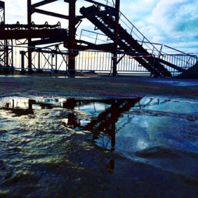

Dunkirk: First Images from the Set of Christopher Nolan’s New Movie
Christopher Nolan has emerged in the last decade as one of the most important and closely watched active film directors. With his Dark Knight trilogy, Inception, and Interstellar — and even his early work like Memento and The Prestige –– Nolan has shown himself an exceptional artist, capable of connecting with all sorts of audiences.
Nolan’s next film is Dunkirk, a World War II drama focused on the evacuation of the French city of Dunkirk in May of 1940, following the Nazi invasion of France in the early stages of the war. The film was first announced late last year, and began filming earlier this month on location with France, with a cast that includes young Fionn Whitehead in the leading role, along with Tom Hardy, Kenneth Branagh, Cillian Murphy, and Mark Rylance, as well as One Direction singer Harry Styles. And now, fans have their first look at Nolan’s next film.
The Italian film magazine Cinefilos, citing the Twitter account of photographer Pierre Volot, posted several photos from the set. The photos are mostly taken on a beach, it appears, and many of them feature Nolan interacting with the actors:
- 
The film will focus on the evacuation, known as Operation Dynamo. Nolan wrote the script himself — without his usual collaborator, his brother Jonathan — although his Interstellar cinematographer Hoyte van Hoytema is on board, as is longtime Nolan composer Hans Zimmer. The project will film in a combination of IMAX 65mm and 65mm large format film, with a July 2017 release date.
Just the prospect of Nolan’s latest turn in the director’s chair is enough to make Dunkirk one of the more anticipated releases of 2017. Add on a strong cast, a fascinating historical story, and the promise of Nolan working in a cutting-edge format that is meant to be seen in theaters, this is absolutely one to look forward to.
The only concern is the question of whether American audiences will come to see a World War II movie set at a time before the U.S. even entered the war. And while Joe Wright may not have nearly the reputation Nolan does, Wright’s 2007 film Atonement featured its own treatment of the Dunkirk evacuation, including a five-minute tracking shot that was strongly praised by critics. Nolan will have to find a way to top that, although there’s little doubt that he’s capable.
Dunkirk is scheduled for release June 21, 2017